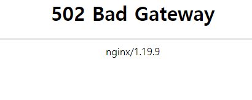

DNS_PROBE_FINISHED_NXDOMAIN
2022, Jul 15
ssl freenom
freenom에 등록한 도메인주소로 잘 써왔는데
갑자기 접속이 안되어서
공인ip로 접속해보니
NET::ERR_CERT_COMMON_NAME_INVALID 에러가 나고 있었다
도메인 주소로 nslookup 하면
DNS request timed out.
timeout was 2 seconds.
DNS request timed out.
timeout was 2 seconds.
*** DC1.spectra.co.kr에 대한 요청이 제한 시간을 초과했습니다.
try1..
혹시 회사망에서 막혔나 싶어서, 핸폰에서 lte로 했는데도 마찬가지
try2..
whois에서 도메인검색하면 없는 도메인이라고 나온다…
try3..
일단 로컬pc 호스트파일에 공인ip와 도메인을 추가하고
크롬에서 다시 띄워보니

try4..
ssl이 잘못되었나 싶어서..다시 만들어보고 흠..
solved
원인은
https://maivve.tistory.com/301
이렇다고 함
하루 지나니 정상화되었다;;;;
그냥 사내 멀티 도메인에 추가신청했다.